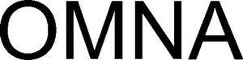

Trade Mark Journal No.2025/040 3 October 2025
WO0000001875711 (9,37,42,45)
Office of origin: Australia
Date of International Registration:1 April 2025
Date of designation in the UK:
1 April 2025

International priority date claimed: 17 December 2024
(Australia)
(2507702)
- Class 9
- Scientific, research, navigation, surveying, photographic, cinematographic, audiovisual, optical, weighing, measuring, signalling, detecting, testing, inspecting, life-saving and teaching apparatus and instruments; safety alarms (other than for vehicles); apparatus for analysing images (other than for medical use); image analysing apparatus; apparatus for generating images; apparatus for image processing; apparatus for recording images; apparatus for analysis (other than for medical use); image analysing instruments; image analysers; image data capture devices; smart watches; screen protectors for smart watches; acoustic warning apparatus; security warning apparatus; warning alarms (other than for vehicles); warning apparatus (other than for vehicles); warning indicating apparatus (other than for vehicles); warning signs; whistles (warning apparatus); directional signage (luminous or mechanical); personal reflectors for use in road safety; safety apparatus (for the prevention of accident or injury); safety apparatus for arresting the fall of workmen; safety apparatus for industrial use; mechanical safety apparatus; safety monitoring apparatus (electric); portable computers; portable gas detecting instruments; portable radio-telephones; portable data receivers; portable sound recording apparatus; portable telecommunications apparatus; portable transmitters; sirens; electrical recharging apparatus; data recording apparatus; electrical apparatus for recording data; optical apparatus for the recording of data; optical data recording apparatus; remote data gathering apparatus; application software; cameras; cameras for use in identification; computer software products; computer software programmes; computer software applications (downloadable); downloadable software applications (apps); computer software and hardware platforms for cooperative intelligent transport systems; computer software and hardware platforms for intelligent transport systems; computer programmes for image processing; fall arresting safety apparatus for the protection of workmen; industrial safety apparatus for the protection of workers against accidents; industrial safety apparatus for the protection of workers against injury; apparatus for personal use for protection against accident; apparatus for personal use for protection against injury; apparatus for protection against accident; apparatus for protection against assault; apparatus for protection against injury; arm bands (reflective) for protection against accident or injury; armbands (luminous) for protection against accident or injury; articles of clothing specifically adapted for protection against accident; articles of headgear specifically adapted for protection against accident or injury; clothes specifically adapted for protection against accident; clothes specifically adapted for protection against injury; industrial apparatus for the protection of workers against accidents; industrial apparatus for the protection of workers against injury; industrial safety instruments for the protection of workmen against accident; industrial safety instruments for the protection of workmen against injury; personal protection devices (electronic alarms); personal protection devices (other than firearms or side arms); protection apparatus for personal use against accidents (other than sports articles or part of sports suits); protection apparatus for personal use against injury (other than sports articles or part of sports suits); protection devices for personal use against injury; clothing for protection against fire; protective outer clothing specifically adapted for protection against accident or injury; protective work clothing specifically adapted for protection against accident or injury; ready made articles of clothing specifically adapted for protection against injury; safety clothing specifically adapted for protection against accident or injury; communication software; computer software for communicating purposes between microcomputers; computer software for communication between computer processes; data communications software; acoustic receivers for telephonic communication with computers; apparatus for communication; apparatus for data communications between computers; communication apparatus; communication devices; communications apparatus; vibration detectors; vibration sensors; impact sensors; alarm sensors; distance sensors; gas sensors; infrared sensors; movement sensors; optical speed sensors; sensor apparatus, other than for medical use; sensors (measurement apparatus), other than for medical use; sensors for measuring speed; sensors for measuring depth; sensors for real time data input apparatus; sensors for real time data output apparatus; shock sensors; video apparatus; video cameras; video camera security apparatus; video surveillance cameras; video camera security installations; video cameras adapted for monitoring purposes; video recording apparatus; closed circuit television surveillance cameras; electronic cameras; video recording instruments; video signalling apparatus; metal tripods for photographic apparatus; mounts for attachment to tripods for cameras; tripods for cameras; tripods for electronic apparatus; tripods for microphones; tripods for loudspeakers; tripods for photographic apparatus; tripods for video cameras; railway traffic safety apparatus; computer facilities for traffic management; computer software and hardware platforms for traffic management; computer systems for advanced traffic management; computer systems for traffic management; electric apparatus for use in traffic control; instruments for monitoring traffic; railroad control apparatus for the control of traffic on railways; railroad signalling apparatus for the control of traffic on railways; railway traffic safety appliances; railway traffic signalling instruments; reflecting items for wear, for the prevention of traffic accidents (not being clothing); reflective articles for the prevention of traffic accidents; reflective devices for the prevention of traffic accidents; reflectors for the prevention of traffic accidents; road traffic direction devices (luminous); road traffic direction devices (mechanical); traffic control apparatus (electronic); traffic control apparatus (lighting); traffic control installations (lighting); traffic control installations (electronic); traffic control apparatus (mechanical); traffic guidance apparatus (luminous sign); traffic guidance apparatus (mechanical); traffic guidance installations (electronic); alarm bells; alarm control apparatus; alarm devices (other than for vehicles); wearable activity trackers; wearable activity trackers with pulse rate monitoring function; wearable computers; protective belts for the prevention of accidents; protective belts for the prevention of injury; safety life belts; apparatus for recording occupational health and safety risks, hazards and incidents.
- Class 37
- Computer support services (advisory and information services in relation to the repair, maintenance and installation of computer hardware and peripherals); computer support services (installation, repair and maintenance of computer hardware and peripherals); information technology (IT) services (computer and computer peripherals installation and maintenance); installation and repair of computer hardware; installation of cameras; installation of communications network apparatus; installation of communications network instruments; installation of data network apparatus; installation of data processing apparatus; installation, maintenance and repair of computer hardware; installation, maintenance and repair of computer peripherals; maintenance and repair of industrial apparatus; maintenance, installation and repair of industrial apparatus and instruments; civil construction services; civil engineering services.
- Class 42
- Scientific and technological services and research and design relating thereto; scientific or technological research relating to safety; design of watches; design and development of ergonomic products in relation to occupational health and safety; design and development consultancy for ergonomic products in relation to occupational health and safety; computer support services (programming and software installation, repair and maintenance services); computer support services (software advisory and information services); development of computer software application solutions; hosting of software as a service (SaaS); software as a service (SaaS); computer software development; computer software design; computer software programming services; design and development of computer software; design and development of computer software for others; design of computer software; development of computer software; development of software; information technology (IT) services (computer hardware, software and peripherals design and technical consultancy); installation and maintenance of computer software; maintenance of computer software; software creation; environmental monitoring services; monitoring of computer systems by remote access; monitoring of computer systems for detecting unauthorised access or data breach; remote monitoring of computer systems; development of new products; electronic monitoring of personally identifying information to detect identity; engineering; engineering services and digital forensic science in the field of accident investigation; identity validation (computer security); electrical engineering services.
- Class 45
- Security services for the physical protection of tangible property and individuals; workplace safety services; occupational safety services; safety auditing [regulatory compliance auditing]; safety risk assessment and risk management; surveillance services relating to the physical safety of persons; video monitoring and surveillance services; advice, information and consultancy in relation to the foregoing.
Acusensus IP Pty Ltd
Representative: King & Wood Mallesons, Level 27, Collins Arch,, 447 Collins Street, Melbourne VIC 3000, AUSTRALIA